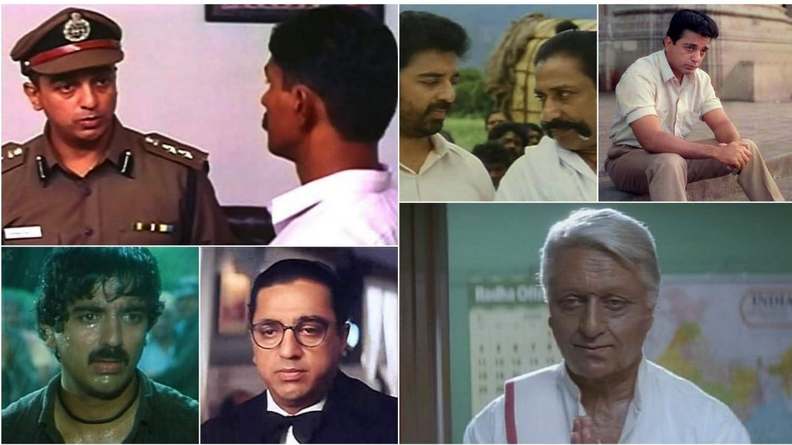

‘Nayagan’ to ‘Nammavar’: Interesting facts about Kamal Haasan.
Ten different roles in a single film.
- ‘Dasavatharam’ - 2008
- ‘Highest number of Films submitted to Oscar’ 
- ‘Highest paid actor’
- ‘Six different languages movies’
- ‘Dancing skills’

Kamal’s list of accomplishments is lengthy, from dramatically altering his appearance to portraying the hardest of roles in prosthetics at a time when no one else had attempted it in film.
With seven films nominated for an Academy Award in the Best Foreign Language Film category, Kamal Haasan has the most nominations.

From 1988 to 1998, Kamal Haasan was the highest-paid star. In 1994, he also made history as the first Indian actor to be paid INR 1 crore for a single film. The legendary actors Rajesh Khanna and Amitabh Bachchan previously held the record.

Kamal Haasan is the only Indian actor who has appeared in films in six languages: Hindi, Malayalam, Tamil, Telugu, Kannada, and Bengali.

Not only is Kamal Haasan an excellent actor, but he is also a great dancer. MGR in Naan Yen Piranthen, Sivaji Ganesan in Savaale Samaali, and Jayalalitha in Anbu Thangai are among the actors for whom he choreographed.